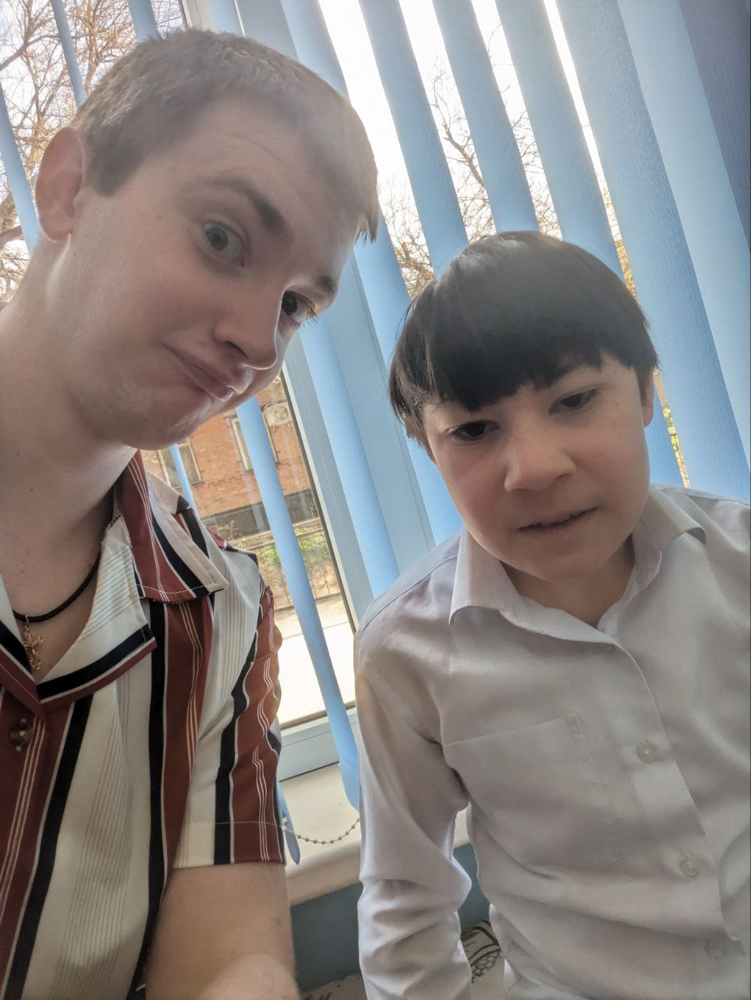
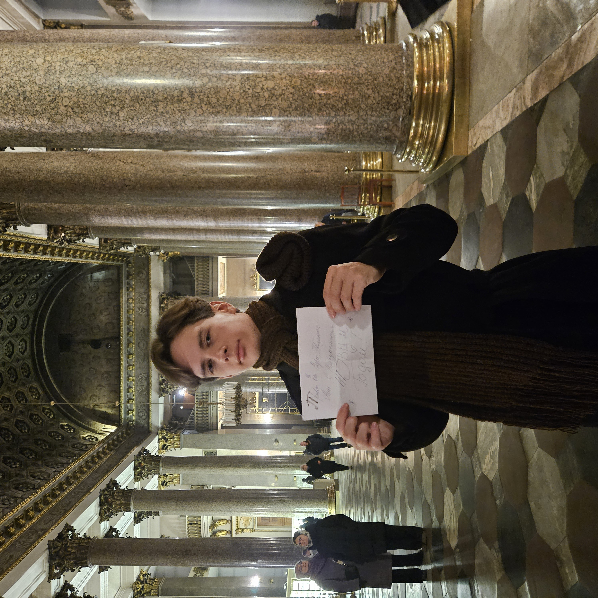
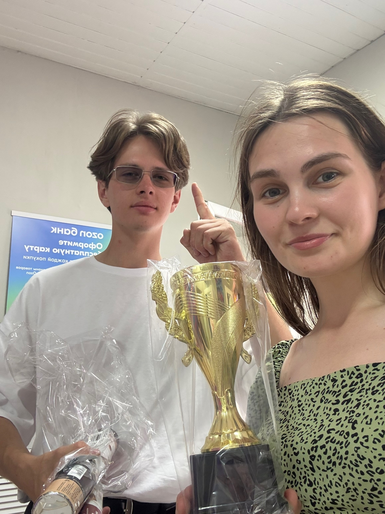
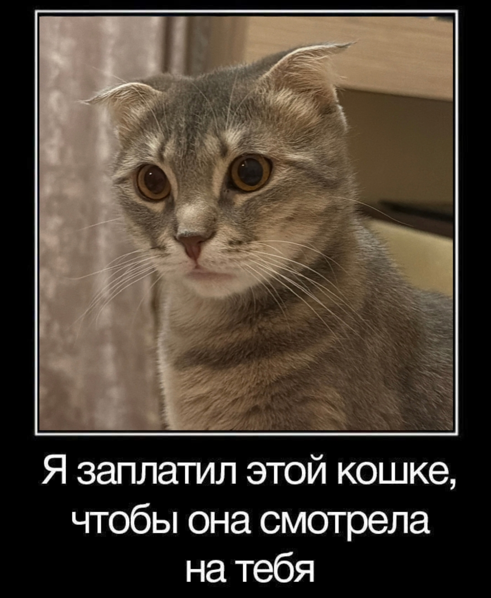

Сколько разных моментов у нас было - и смешных, и веселых, и нервных. Каждый из них не вспомнить, но некоторые особенно запомнившиеся события я хотел бы отметить здесь, на этой странице. Может они не все слишком яркие, но в моей памяти они закрепились крепко.

Был, например, памятный момент с нашим кентом Максоджоном, когда я записал его имя на диктофон и положил его проигрываться в другом конце 25-го кабинета. Недоумевание на его лице и наш смех в тот момент запомнились особенно ярко.

А ещё мне запомнилось, как в декабре, в первый год работы, я сидел у тебя в том же кабинете и вязал себе шарф (да, иногда умею). Ты что-то делала за компьютером или просто сидела рядом, мы и молчали, и болтали о мелочах, но этого было достаточно, чтобы чувствовалось спокойствие.

Я помню, как сказал тебе, что порой не знаю чего хочу от жизни. Я ожидал услышать привычный ответ в стиле "не парься", но ты сказала, что у тебя тоже бывает такое. В тот момент мне стало проще, я понял, что необязательно быть идеальным, а можно просто быть собой.

Мне приятно, что у нас сложился небольшой мир, понятный только нам. Семка (любой темный жук), придуманная Конограевым, твоя кошка Пипетка (её так и зовут), Анна Дредовна как вариант твоего имени, сирень, которую я по весне не срезал для тебя. Каждый раз, когда я слышу эти слова, то мысленно возвращаюсь в этот мир, закрытый от глаз других людей.
Ещё было множество моментов, которые ты сама записывала со мной под какие-то треки. Я всегда стеснительно сжимался, когда ты начинала их снимать, но в то же время мне и нравилось быть сопричастным к твоим съёмкам.
Эти моменты – лишь малая часть из того небольшого периода жизни. Но я хочу, чтобы они остались с тобой навсегда здесь, на этой странице. Потому что каждый момент, даже те, которые я и не помню, повлияли на меня. Об этом - на следующей странице.
За все эти кадры — спасибо,
Володя Английский